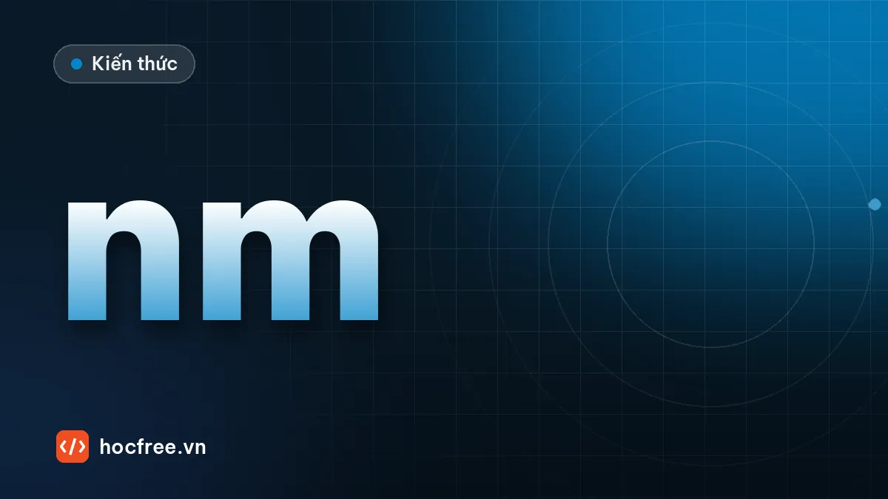

Màu đèn, kính lọc và phân cực: tăng tương phản cho Machine Vision
Chọn màu đèn theo màu bù, đặc tính từng bước sóng, kính lọc bandpass và phân cực để xóa chói.

Học xong bài này, bạn sẽ
- Chọn màu đèn theo màu bù
- Dùng kính lọc chặn ánh sáng môi trường
- Dùng phân cực để xóa chói
Nên học trước: 7 kiểu chiếu sáng và khi nào dùng
Nội dung bài viết
Chọn đúng kiểu đèn (backlight, dome, coaxial...) là bước đầu. Bước tiếp theo, thường bị bỏ qua, là chọn đúng màu đèn, kính lọc và phân cực. Ba yếu tố này có thể biến một khuyết tật gần như vô hình thành vết đen rõ ràng.
Màu đèn với camera đơn sắc
Camera mono không thấy màu, nhưng thấy độ sáng phản xạ của vật dưới ánh sáng chiếu vào:
- Vật phản xạ mạnh ánh sáng cùng màu với nó → hiện sáng.
- Vật hấp thụ ánh sáng màu bù (đối diện trên vòng màu) → hiện tối.
| Muốn làm tối | Dùng đèn |
|---|---|
| Chữ, vết màu đỏ | Xanh lá hoặc xanh dương |
| Chi tiết xanh dương | Đỏ hoặc vàng |
| Chi tiết xanh lá | Đỏ hoặc tím |
Ví dụ: kiểm tra mực in đỏ trên hộp giấy trắng dưới đèn xanh lá, chữ sẽ đen đậm trên nền trắng, phân ngưỡng cực kỳ ổn định.
Đặc tính từng bước sóng
- Xanh dương (khoảng 470 nm): bước sóng ngắn, tán xạ nhiều trên bề mặt, làm nổi vết xước nhỏ, kết cấu bề mặt.
- Đỏ (khoảng 620–660 nm): xuyên tốt hơn qua một số vật liệu, ít nhạy với nhám bề mặt, hiệu suất LED cao.
- Hồng ngoại (IR, khoảng 850–940 nm): "nhìn xuyên" một số loại mực, nhựa màu và nhãn, giảm ảnh hưởng của màu sắc in ấn; con người không thấy nên không gây chói mắt công nhân.
- Tia cực tím (UV): làm phát quang keo, dầu, mực huỳnh quang, dùng kiểm tra có/không có keo trong suốt.
- Đèn trắng: cần cho camera màu, nhưng với camera mono thường kém tương phản hơn đèn đơn sắc.
Kính lọc (filter)
- Bandpass: chỉ cho qua dải bước sóng của đèn bạn dùng. Ánh sáng môi trường (đèn nhà xưởng, nắng) bị chặn phần lớn, hệ thống ổn định hơn rất nhiều. Đây là phụ kiện rẻ mà hiệu quả cao nhất.
- Longpass / shortpass: chặn một phía bước sóng, ví dụ chặn ánh sáng nhìn thấy khi dùng IR.
- Kính bảo vệ: tấm kính phẳng phía trước ống kính, dễ thay khi bị bám bụi, dầu.
Phân cực (polarization)
Ánh sáng phản xạ gương (chói) trên vật bóng phi kim loại như nhựa, kính, sơn bóng thường bị phân cực. Đặt một tấm phân cực trước đèn và một tấm trước ống kính, xoay tấm ở ống kính vuông góc với tấm ở đèn: phần lớn ánh sáng chói bị chặn, chi tiết bên dưới hiện ra.
- Hiệu quả kém với bề mặt kim loại (phản xạ kim loại giữ trạng thái phân cực khác).
- Mỗi tấm phân cực làm mất một phần đáng kể ánh sáng, cần đèn mạnh hơn.
- Camera phân cực chuyên dụng (cảm biến có bộ lọc phân cực trên từng điểm ảnh) còn phát hiện được ứng suất trong nhựa trong suốt, vết xước trên kính.
Quy trình thử nghiệm
- Chụp mẫu tốt và mẫu lỗi dưới đèn trắng, đỏ, xanh lá, xanh dương, IR.
- Tính độ tương phản giữa vùng lỗi và nền cho từng cấu hình.
- Chọn cấu hình tương phản cao nhất, thêm bandpass filter tương ứng.
- Thử với ánh sáng nhà xưởng bật/tắt để chắc chắn hệ thống không bị ảnh hưởng.
Xem tổng quan các kiểu chiếu sáng trong bài 7 kiểu chiếu sáng trong Machine Vision.
Bài tập thực hành
- Vật màu đỏ trên nền xanh lá: chọn màu đèn để vật tối nhất và giải thích.
Làm xong bài tập mới chuyển sang bài tiếp theo: tự viết code là cách duy nhất để nhớ lâu.